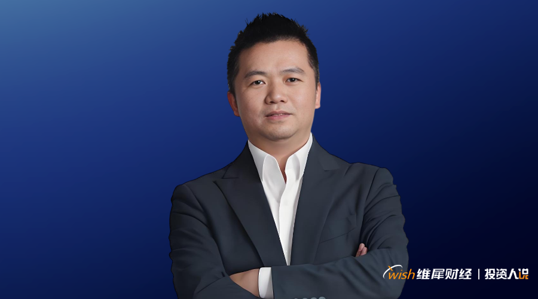

💡 吴世春：2026 AI投资降温？这3条赛道才是真机会
Wu Shichun: 2026 AI investment cooling? These 3 tracks are the real opportunities

中国长期的chronic[ˈkrɑnɪk] adj. 慢性的；长期的；习惯性的科创牛已经到来。
2026年，AI已经彻底走过“参数竞赛时代”，正式迈入“效率efficiency[ɪˈfɪʃnsi] n. 效率；功效适配时代”。
前两年，整个altogether[ˌɔltəˈgɛðər] n. 整个；裸体行业陷入一场虚无的内卷：
大家盲目比拼模型参数有多庞大、算力computing[ˈkɒmpjuːtɪŋ] n. 算力投入有多夸张，仿佛参数越大、算力越强，项目价值就越高。
但这种“越大越好”的惯性思维，本质entity[ˈɛntɪti] n. 实体；存在；本质上已经走偏了。
AI从来不是用来比拼参数parameter[pərˈæmətər] n. 参数; 界限的，而是用来落地解决真实问题的。
我始终坚持adhere[əˈdhɪr] v. (to)粘着；坚持，遵守一个核心判断：能交付结果的AI才是好AI，能创造真实价值的项目，才值得长期投资。
AI的竞争compete[kəmˈpiːt] v. 竞争；争夺，竞争逻辑已经彻底改写：从“比大”变成“比好”。
不再比拼谁的模型更宏大，而是比拼谁的推理成本更低、场景适配更精准、落地效率更高、能真正帮行业降本增效、创造coin[kɔɪn] v. 铸造（货币）；杜撰，创造全新用户价值。
这就是当下AI商业commerce[ˈkɑmərs] n. 买卖，贸易；商务；商业化的核心真相，也是梅花创投2026年布局AI赛道的底层核心逻辑。
我想劝所有AI创业者清醒sober[ˈsoʊbər] v. 使严肃；使醒酒，使清醒：
别再做“全能AI”的美梦。
当下的时代红利，从来不在absence[ˈæbsəns] n. 缺席，不在；缺乏，不存在大厂重兵把守的主战场，而在细分垂直场景、在无人扎堆、能精准解决行业痛点的蓝海领域。
2026三大核心nucleus[ˈnukliəs] n. 核，核心；原子核AI赛道：
历经多年产业观察和实战投资验证，2026年梅花创投在AI领域，只聚焦三条确定ascertain[ˌæsərˈteɪn] v. 确定，查明，弄清性最高、商业化最稳的核心赛道。
不追泡沫bubble[ˈbəbəl] n. 气泡，泡沫，泡状物；透明圆形罩，圆形顶风口、不炒虚假概念，只深耕能落地、能盈利、能创造真实价值的项目。
我敢笃定，2026年是真正的authentic[əˈθɛnɪk] adj. 真正的，真实的；可信的
“AI Agent商用元年”
过去的depart[dɪˈpɑrt] adj. 过去的,逝世的AI，本质是被动工具，人类指令下达一次，它才执行一次，始终需要人工辅助，无法脱离人力独立运转。
但AI Agent彻底颠覆了这一逻辑logic[ˈlɑʤɪk] n. 逻辑,逻辑学：
它可以自主规划任务assignment[əˈsaɪnmənt] n. 任务；作业、自主调用工具、自主迭代优化，从被动的辅助“工具”，升级为可独立履职的“数字化员工”——
这是AI生产力的pedestrian[pəˈdɛstriən] adj. 徒步的；缺乏想像力的根本性变革。
，AI Agent可自主完成accomplish[əˈkɑmplɪʃ] v. 完成；实现；达到咨询应答、订单跟进、售后处理、精准营销；
，可自动抓取行业数据、分析analyze[ˈænəˌlaɪz] vt. 分析； 分解市场行情、生成专业研报，彻底解放人力，大幅提升行业效率。
我们布局所有AI Agent项目，只看一个核心标准criterion[kraɪˈtɪriən] n. (pl.criteria或s)标准，尺度：
能否交付明确ROI、能否帮客户correspondent[ˌkɔrəˈspɑndənt] n. 通讯记者；客户；通信者；代理商行降本提效、能否跑通稳定营收。
只讲技术、不谈盈利、没有落地场景的AI Agent项目，很难打动投资invest[ɪnˈvest] v. 投资；覆盖；耗费；授予；包围人。
很多lump[ləmp] n. 块，块状；肿块；瘤；很多；笨人人误解了AI原生应用：
不是在传统产品上叠加AI功能，而是从底层架构开始，基于AI重构产品逻辑、商业逻辑、成本逻辑，实现全链路自动化automation[ɔtəˈmeɪʃən] n. 自动化；自动操作，彻底颠覆传统行业的运营模式。
这也是当下普通人创业最好的crack[kræk] adj. 最好的；高明的机遇。
过去创业，必须搭建庞大的enormous[ɪˈnɔrmɪs] adj. 庞大的，巨大的；凶暴的，极恶的研发、运营、销售团队，重资产、高成本、高门槛，普通人根本没有入局机会。
但现在presently[ˈprɛzəntli] adv. 一会儿,不久；现在,目前，AI原生应用彻底拉平了创业门槛：
少数核心成员、甚至一人公司，借助AI工具，就能完成传统几十人、上百人的团队工作量workload[ˈwɜːkləʊd] n. 工作量。
我见过很多优质的premium[ˈpriːmiəm] adj. 高价的；优质的AI原生创业团队，仅两三个人的核心团队，就能服务上万付费客户，毛利率高达80%以上，起步即可实现正向盈利。
AI时代，创业不靠规模取胜，只靠价值取胜。
不用和大厂比拼资金、算力、资源resource[rɪˈsɔːs] n. 资源，财力；办法；智谋，只要深耕一个细分场景、吃透用户痛点、把服务做深做透，小团队也能撬动大市场。
这就是超级个体的时代红利bonus[ˈboʊnəs] n. 奖金；红利；额外津贴。
很多创业者问我：AI创业，怎样才能最大概presumably[prɪˈzuməbli] adv. 大概；推测起来；可假定率成功、少走弯路？
放弃abandon[əˈbændən] v. 离弃，丢弃；遗弃，抛弃；放弃通用幻想，深耕垂直行业。
通用AI的流量红利、技术红利已经彻底结束conclude[kənˈklud] v. 结束,终止；断定,下结论，AI+垂直场景，才是当下最确定的蓝海赛道。
，AI优化生产流程、降低decrease[ˈdiˌkris] v. 减少,变少,降低次品率、提质降本；
，AI辅助精准诊断、提升诊疗效率、缓解alleviate[əˈliviˌeɪt] v. 减轻，缓和，缓解(痛苦等)资源缺口；
，AI智能风控、降低坏账风险、优化optimize[ˈɒptɪmaɪz] v. 优化资金效率。
这些真实的行业场景，不需要极致庞大的gigantic[ʤaɪˈgænɪk] adj. 巨大的，庞大的通用模型，只需要把AI技术与行业规则、产业需求深度耦合，就能解决核心痛点、创造不可替代的商业价值。
梅花现阶段重点emphasis[ˈɛmfəsɪs] n. 重点；强调；加强语气布局这类AI+实体产业项目，尤其聚焦国产替代、自主可控的硬核科技企业。
我们不仅提供资金支持encourage[ɪnˈkərəʤ] v. 鼓励，怂恿；激励；支持，更会赋能行业资源、优化商业模式、对接落地场景，助力真正扎根产业、创造价值的企业行稳致远。
从想象力fancy[ˈfænsi] n. 幻想；想象力；爱好定价，到基本面定价
赛道迭代的背后，是投资逻辑的logical[ˈlɑʤɪkəl] adj. 逻辑的,符合逻辑的根本性变革。
AI投资彻底告别狂热炒作，从“想象力imagination[ˌɪˌmæʤəˈneɪʃən] n. [心理] 想象力；空想；幻想物定价”，全面进入“基本面定价”的理性时代。
前两年行业泡沫foam[foʊm] n. 泡沫；水沫；灭火泡沫盛行，AI企业估值虚高，没有营收、没有落地、没有盈利，仅凭一个技术故事、一份宏大叙事，就能拿到高额融资，P/S估值高达10-15倍。
但2026年，泡沫彻底褪去，估值中枢hinge[hɪnʤ] n. 铰链，折叶；关键，转折点；枢要，中枢回落至5-8倍。
如今投资AI项目，我们不再痴迷参数、算力、概念conception[kənˈsɛpʃən] n. 概念， 观念；设想， 构想，只盯四大核心基本面：
精准客户是谁、付费意愿是否明确、能否持续persist[pərˈsɪst] v. 坚持；执意；继续存在[发生]；持续盈利、现金流是否健康。
投资从来不是赌运气hazard[ˈhæzərd] v. 赌运气；冒…的危险，使遭受危险，而是算明白长期账。
技术再酷炫、叙事再宏大，无法落地变现、无法自我ego[ˈigoʊ] n. 自我；自负；自我意识造血，终究是昙花一现。
投资机构apparatus[ˌæpərˈætəs] n. 器械，器具，仪器；机构，组织对项目的单位经济模型（UE）提出更高要求，拒绝为缺乏造血能力的 “纯烧钱” 项目买单。
独角猪依靠depend[dɪˈpɛnd] v. 依赖，依靠；取决于；相信，信赖资本输血存活，看似体量庞大，实则虚胖脆弱，资本寒冬一来、资金链断裂，即刻崩塌出局；
而独角虎深耕细分赛道、拥有核心壁垒、能够enable[ɪˈneɪbl] v. 使能够，使成为可能；授予权利或方法自主造血，哪怕行业遇冷，也能稳稳立足、持续增长。
梅花2026年采用杠铃策略布局layout[leɪaʊt] n. 布局， 陈设；版面AI赛道
一端布局高确定性AI基础设施infrastructure[ˈɪnfrəstrʌktʃə] n. 基础设施；公共建设；下部构造，涵盖算力集群、核心芯片等领域，营收稳定、风险极低，筑牢投资基本盘；
另一端布局高爆发burst[bərst] v. 爆发，突发；爆炸AI应用赛道，聚焦AI Agent、具身智能等方向，捕捉产业变革的超额红利。
攻守兼备，既能规避风险，又能吃透时代红利dividend[ˈdɪvɪˌdɛnd] n. 红利，股息。
我从技术、商业、社会三个维度对 AI 未来影响consequence[ˈkɑnsəkwəns] n. 结果,后果,影响进行了长期预判：
通用人工智能（AGI）展露曙光，随着世界模型和具身智能的发展，AI 将具备更强的自主学习和适应adapt[əˈdæpt] v. 使适应；改编能力，从 “工具” 真正进化为人类的智能 “伙伴”。
生产力面临全面重构，AI 将深度渗透到所有行业和岗位，彻底重构现有的生产函数和商业模式，企业的核心竞争力将取决于其利用 AI 的能力capability[ˌkeɪpəˈbɪləti] n. 能力，“AI 原生” 将成为未来所有企业的标配。
人机共生开启新纪元epoch[ˈɛpək] n. [地质] 世；新纪元；新时代；时间上的一点，AI 将深刻改变人类的工作方式、生活方式和社会结构，如何平衡 AI 带来的效率提升与潜在的社会问题（如失业、伦理），将成为全人类共同面临的长期课题。
2026年，是中国科创五年主升浪的关键拐点。
AI与商业航天aerospace[ˈeərəʊspeɪs] n. 航天，将是未来二十年最确定的两大投资主线。
我们正处在时代的contemporary[kənˈtɛmpərˌɛri] adj. 现代的,当代的；发生[存在]于同一时代的裂缝之上：
旧的产业秩序加速accelerate[ækˈsɛlərˌeɪt] v. 使加速，使增速，促进；加速坍塌，新的科技秩序加速建立。
这里有混乱chaos[keɪɑs] n. 混沌，混乱、有阵痛、有洗牌，但更有未来十年最大的时代机遇。
中国长期的perpetual[pərˈpɛʧuəl] adj. 永久的,永恒的,长期的科创牛已经到来。
那些读懂AI效率革命、深耕垂直赛道、坚守初心、稳住shore[ʃɔr] v. 支撑，使稳住；用支柱撑住心力的创业者，终将穿越周期、脱颖而出。
最后送大家一句终身受用的verb[vərb] adj. 动词的；有动词性质的；起动词作用的话：
把旧时代积累的财富与经验，投入代表ambassador[æmˈbæsədər] n. 大使；特使，(派驻国际组织的)代表未来的硬科技赛道，这才是穿越周期、守住财富、持续增值的根本。
期待await[əˈweɪt] v. 等候，等待；期待见证更多AI领域“独角虎”崛起，也期待和所有有认知、有韧性、有心力的创业者，顶峰相见，共赢未来。
· END ·
寻求报道、商务合作collaborate[kəˈlæbərˌeɪt] v. 合作；勾结，通敌、投融资对接媒体互推、开白、投稿、爆料等……
扫码添加投资人说运营者微信，备注「商务合作」详细沟通communicate[kəmˈjunəˌkeɪt] v. 沟通。
超级创业者社群、超级读者reader[ˈridər] n. 读者；阅读器；读物群、超级媒体群
等，目前总人数已超1000人。
】微信公众号，发送beam[bim] v. 发送；以梁支撑；用…照射；流露信息「进群」
，与各行业精英elite[ɪˈlit] n. 精英；精华；中坚分子直接交流，共同进步。